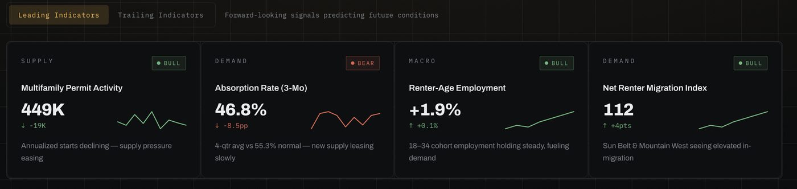
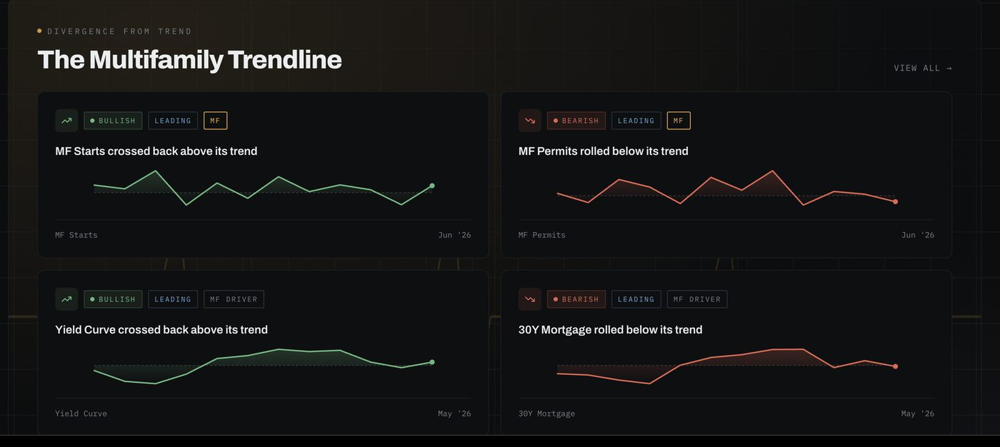

The tool
Econiq Method teaches you to read the cycle. Cignal System runs that read every morning — against your markets, with the indicators sorted by when they actually move.
What it does
Most market dashboards give you every metric at equal weight. That's the problem the framework exists to solve — occupancy and closed comps confirm what already happened, while concession depth and renewal spread are already telling you what's next.
Cignal sorts every indicator into leading, coincident, or trailing, and shows you the sequence rather than the snapshot.

Structure
The classification that sits underneath everything Econiq Method teaches.
Concession depth, renewal spread, permit velocity, employer announcements, absorption against deliveries. The signals that turn before anyone agrees the market has.
Occupancy, effective rent, traffic. Useful for confirming a call — useless for making one early.
Closed comps, cap rates at sale, T-12 performance. By the time these confirm the turn, the window has closed.

Who it's for
Acquisitions teams underwriting against a phase rather than a spreadsheet assumption. Asset managers setting renewal strategy. Principals who need one shared read across a portfolio instead of four people with four opinions.
Recon teaches you to run the read manually, which is how you should learn it. Cignal is what you use once you know what you're looking at.
Start with Recon → Read: Ahead of the Herd →Access
Cignal System
—
Pricing announced at launch
Econiq Method graduates get first access. Join the list and you'll hear before it opens publicly.
Request accessQuestions
No. Every method taught in Recon can be run by hand with public data. Cignal removes the assembly work once you understand what you're assembling.
Coverage expands over time. Market list and submarket depth are published at launch.
No. It reports where indicators sit and in what order they've moved. The judgment stays yours — which is why the training comes first.
Econiq Method is the training and owns the framework. Cignal System is the software that runs it. Learn it at Econiq, apply it with Cignal.